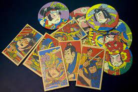
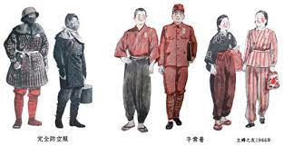

シニア世代に質問してみた
１０の質問
- ローカルコミュニティーに参加しているか
- スマートフォンを使用しているか
- 一番古い付き合いの人との出会いはいつか
- .人生で一番感動した出来事
- 時代の流れを感じた出来事
- paypayなどのコード決済を利用したことがあるか
- デジタル社会を不便だと感じたことはあるか
- 新聞をとっていたことはあるか
- スポーツといえば？
- 子供の頃好きだった遊びはなんですか
記憶装置



デジタルフィールドノート
- 一週間待ちを観察してみて、スマートフォンを使っているシニア世代の方はいたが、
イヤフォンを使っている方は見つけられなかった - アルバイト中に、機械で注文するシステムを理解できずに質問してくるお客さんの９割が市ヒア世代の方であった
- 会員証を提示する際に同世代から５０代くらいの方はアプリ会員の提示をしてくるが、
６０代から上の方はほとんどカード会員証を提示してくる（バイト）